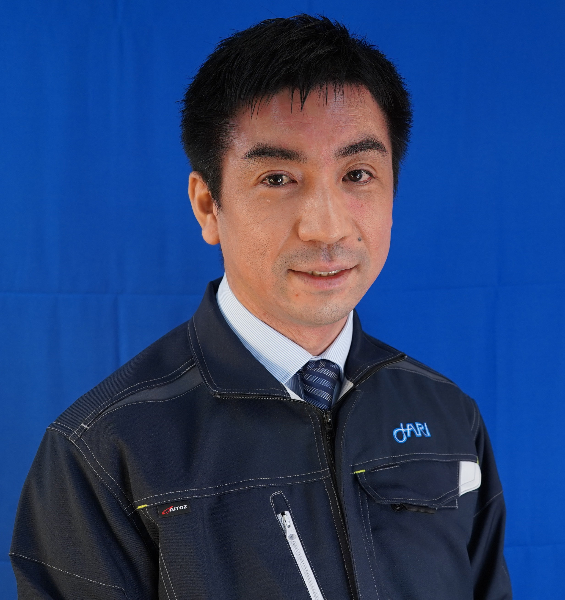

Driving behaviour models to operationalize the international regulatory framework for the safety approval of automated vehicles
Biagio Ciuffo
European Commission – Joint Research Centre
An event bringing together researchers and practitioners working on human behavior models and automated vehicles.

Virtual evaluation of automated vehicles (AVs) increasingly relies on models of human road user behavior. However, the development, validation, and application of such models is challenging. This event brings together researchers and practitioners to discuss advances and open questions in road user behavior modeling in the context of AV evaluation, focusing on model development and application for credible AV evaluation.
Topics of interest include (but are not limited to)
Important note: ITSC registration is required for attending the workshop. You can register for the workshop day only or for the full conference (see details here).
In addition to the workshop, we are organizing an invited session during the main ITSC conference on the topic of road user behavior models. All ITSC attendees with full conference registration are welcome to join the invited session (the detailed schedule will be announced in due time).
Biagio Ciuffo
European Commission – Joint Research Centre

Jonas Bärgman
Chalmers University of Technology

Manel Hammouda
BMW Group

Johan Engström
Waymo

Hiroki Nakamura
&
Sou Kitajima
Japan Automobile Research Institute

Gustav Markkula
University of Leeds
The contributed program features recent work on behavioral reference models,
simulation of surrounding road users, and fundamental approaches to
computational modeling of human road user behavior.
Papers accepted to ITSC invited session will be highlighted in short spotlight presentations.
Kevin Kefauver · Virginia Tech Transportation Institute (VTTI)
Abstract
Retrospective evaluations of automated vehicle (AV) safety performance
typically compare AV crash rates to those of the general driving
population. However, this may include crashes involving risky,
impaired, distracted, or otherwise non-compliant driver behavior. An
alternative approach is to benchmark AV performance against a
behaviorally defined subset of competent and compliant human drivers.
This work introduces an initial behavioral reference model derived
from U.S. national crash data (NCD) that classifies prudent,
attentive, and sober (PAS) drivers by removing vehicle crashes with
evidence of imprudent, inattentive, or non-sober driving. PAS drivers
are identified using exclusion criteria derived from variables
available in police-reported crash data, including indicators of
impairment, distraction, speeding, and traffic violations. Example
findings are given for light passenger vehicles in police-reported
crashes.
Beyond supporting retrospective AV safety comparisons, the PAS
framework provides an empirical characterization of behavior
consistent with emerging concepts of "careful and competent" human
driving. As such, it can be used to complement behavioral definitions
used in regulatory and industry approaches to AV evaluation. The
resulting PAS population will serve as a data-driven benchmark for
estimating the safety impacts of specific behavioral constraints and
for quantifying the crash reductions associated with excluding
specific forms of unsafe driving behavior.
The presentation will discuss how PAS relates to computational
definitions of desirable driving, including the UNECE Competent and
Careful Human Driver framework and the NIEON driver behavior model,
and examine which behavioral constructs from such models can be
operationalized using NCD. PAS-based filtering will help inform the
development and evaluation of behavioral reference models used in AV
safety assessment, contributing to more interpretable and
policy-relevant AV safety benchmarks.
Giovanni Albano · University of Naples Federico II
Abstract
This study examines how competent and careful human drivers perceive
risk and initiate braking in safety-critical motorway cut-in
scenarios. It relies on evidence from controlled test-track
experiments in which professional drivers reacted to a robotic
surrogate vehicle executing sudden, unindicated cut-ins under
varying speeds, gaps, and lateral velocities. The data are first
used to evaluate the two human benchmark models in UNECE Regulation
No. 157. Although no crash occurred in the experiments, regulatory
models classified about 68% of the manoeuvres as unpreventable,
revealing a mismatch between model predictions and observed
behaviour. This mismatch mainly reflects an inadequate
representation of risk perception and delayed reaction onsets.
A new driver model is therefore derived from the data. The analysis
identifies the dynamic cues governing risk perception, with cut-in
yaw rate emerging as the dominant predictor. Reaction onset is
represented as a discrete-time hazard process and selected through
double Monte Carlo cross-validation, separating model discovery from
out-of-sample assessment. Braking behaviour is modelled using a
Gipps-based formulation, which proved more accurate than the
regulatory models and the IDM in reproducing the observed emergency
braking dynamics.
The resulting model provides a more credible human-driver benchmark
than regulatory models for automated-driving safety assessment in
safety-critical cut-in situations.
Christian Rössert · cogniBIT GmbH
Abstract
Evaluation of automated vehicles depends on models of human road
user behavior. Data-driven and generative models dominate practice
and are assessed with likelihood-based distribution-matching scores.
We argue such scores, dominated by routine driving, are ill-suited to
credible AV evaluation: a model can score well while failing on the
rare, safety-relevant events that contribute little to the mean.
We illustrate failure modes these metrics miss using SMART, a
state-of-the-art trajectory generation transformer model, on the
Waymo Open Dataset. In sparsely represented high-speed scenes, the
model overshoots laterally and leaves the road, and when tested in
emergency conflicts it produces implausible responses that do not
match human brake reaction. We thus propose extending evaluation
metrics to better reflect the full range of relevant driving
behavior.
We then present the latest developments in driveBOT, a mechanistic
cognitive driver model built on the cogniBOT architecture,
representing perception, cognition, and motor control without
fitting to benchmark data. It reproduces routine traffic and
replicates naturalistic-driving effects, including
surprise-modulated emergency braking, and now adds inattentive and
impaired driving through distraction and alcohol-impairment
variants. We discuss its use as a behavioral reference model,
arguing that hybrid mechanistic and AI-based approaches are needed
for credible AV behavior modeling.
Saeed Rahmani · Delft University of Technology
Abstract
Human driving behavior is heterogeneous, and reproducing this
heterogeneity in simulation is essential for automated vehicle (AV)
validation. We present Style-Conditioned Self-Play (SCSP), a
closed-loop multi-agent model that makes driving style an explicit,
controllable, per-agent input grounded in human trajectories. In the
proposed method, a variational autoencoder learns a style latent from
human kinematic data, and a multi-agent policy is then trained by
combining PPO self-play with style-conditioned behavior cloning.
This ties each style value to real driving behavior, so that changing
the input changes the agent's behavior in a continuous and
predictable way. At test time, different agents can be given
different driving styles using a single trained policy. We assess
SCSP along three properties relevant to AV validation. Behavioral
realism is confirmed by a WOSAC score above 0.7. Style controllability
is demonstrated by showing that a single style input can move agents
behavior smoothly from a cautious, low-risk style to an aggressive,
higher-risk one, without loss in realism.
Relevance for AV validation is shown by evaluating an ego planner in
heterogeneous traffic generated by SCSP. Exposing the planner to
heterogeneous traffic doubles its collision rate from 2.2% to 4.6%
and drops its goal completion rate from 96.5% to 87.2%, relative to
homogeneous traffic. These results show SCSP provides a scalable,
human-grounded solution for generating heterogeneous traffic.
Arash Tavakoli · Villanova University
Abstract
Driving is fundamentally an interaction between humans and
intelligent systems. Yet, computational representations of drivers
remain fragmented, often focusing on isolated aspects such as gaze
behavior, or takeover actions. We argue that the next frontier of
human-centered automation is the development of Driver World Models
(DWMs): unified autoregressive models that characterize drivers’
attention, and actions as a function of dynamic traffic context.
In this talk, we first introduce the DWM conceptual framework which
represents the driver as a temporally evolving system whose internal
states, external behaviors, interactions with automation, and
surrounding context jointly shape driving behavior. We will then
present a prototype of the aforementioned framework based on
autoregressive generative models trained on multimodal behavioral and
psycho-physiological driver data collected from controlled
semi-automated driving experiments.
Using DWM, we further distinguish between General DWMs, which
characterize population-level driver behavior and can generate
realistic virtual road users for simulation and automated vehicle
evaluation, and Personalized DWMs, which capture the unique
characteristics of individual drivers offering a pathway toward
humanized automated vehicles.
We conclude by discussing the research directions for establishing
DWM as a new paradigm for computational human behavior modeling and
human-centered intelligent transportation systems.
Julian Frederik Schumann · TU Delft
Abstract
Driving requires humans to continuously perceive, predict, and act
under uncertainty while pursuing multiple goals, from collision
avoidance to efficient and socially coordinated interaction with
other road users. However, existing computational models that explain
human driving behavior are typically fragmented, focusing on
specific scenarios or isolated aspects of behavior. Active inference
has recently emerged as a principled computational and generalizable
framework for modeling such adaptive behavior through the
minimization of expected free energy.
Here, we present a series of active inference models that together
provide a unified account of human driving behavior. We mainly focus
on how active inference can offer a closed-loop explanation of
collision avoidance across diverse traffic scenarios, reproducing
empirical findings on response timing, maneuver selection, and
execution. We then briefly discuss extensions of the same framework
to interactive driving behavior (and the role of traffic rules and
communication therein) and the modeling of affective state.
These extensions demonstrate how active inference naturally
generalizes to increasingly complex aspects of driving, including
interactions between road users and the influence of emotional state
on decision-making, without requiring a fundamentally different
modeling approach. Together, these results highlight active
inference's promise for understanding and modeling human driving
behavior.
Arturo Tejada Ruiz · Integrated Vehicle Safety, TNO
Abstract
This presentation introduces TNO’s research on competent driving as
a reference for assessing Automated Driving Systems (ADS). While
regulations increasingly refer to the behaviour of a “competent and
careful human driver,” the concept remains difficult to define and
measure. TNO approaches competent driving from a Safety-II
perspective, focusing not only on avoiding failures or collisions,
but also on preserving the everyday interactions that make traffic
safe, predictable and socially acceptable.
The work translates competent driving into practical specifications
for ADS assessment. Driving manuals, traffic rules and expert
knowledge are formalized into mathematical descriptions of
behaviour, covering temporal, spatial, ordinal and dynamic
relationships relevant to operational and tactical driving. These
specifications are calibrated using empirical data from professional
CCV-D1 drivers, who provide a candidate reference for competent
highway driving.
The resulting assertion ranges can be used to evaluate whether
automated vehicles behave within defensible bounds of competent
driving, rather than simply checking compliance with fixed rules.
Deviations can then be assessed in terms of frequency, severity,
duration and recovery. The talk aims to stimulate expert discussion
on the assumptions and limitations of this approach, and on how
competent driving can be made explicit, measurable and useful for
the safe introduction of automated vehicles.
Federico Scari · RDW
Abstract
Consumer-testing campaigns such as Euro NCAP offer established
procedures for ADAS but none for ADS, and existing protocols do not
capture how automated behaviour compares to real human drivers. This
contribution presents a scenario-based virtual-testing and grading
framework, developed in the Horizon Europe project i4Driving
(Deliverable D6.6, led by RDW), extending Euro NCAP/UN R157-01-style
evaluation to ADS and ADAS consumer testing.
The framework follows a Scenario-Environment-Analysis structure
(D6.1), aligned with the SUNRISE Safety Assurance Framework, and
grades collision-avoidance, regulatory safety-distance/deceleration
criteria, and comfort, weighted by scenario difficulty. The i4Driving
probabilistic human driver model library, calibrated and validated
against real-driver data, serves as the benchmark for interpreting
automated behaviour.
A key outcome is that human-driver models provide an essential
reference point for interpreting ADS/ADAS behaviour: a human baseline
indicates whether a system struggles in scenarios that are also
challenging for humans, or whether deficiencies are system-specific,
and helps identify cases where a system is technically safe but
uncomfortable, relevant to user acceptance.
Overall, this work supports virtual testing as a scalable, flexible
tool for consumer-testing and shows that human-baseline models can
strengthen future ADS/ADAS evaluation protocols by providing a fair,
realistic, behaviour-based benchmark.
Yueyang Wang · University of Leeds
Abstract
An important aspect in evaluating an automated driving system (ADS)
is how it behaves in safety critical scenarios. Computational driver
behaviour models are created for ADS validation, evaluation, and
benchmarking. However, it remains unclear how such models should be
scored when used as reference models.
We develop and demonstrate a task-oriented scoring framework for
driver behaviour models in collision avoidance scenarios. The
framework decomposes collision avoidance behaviour into
safety-relevant aspects of the response and compares model behaviour
with human reference behaviour. We apply it to six human collision
avoidance scenarios and evaluate four driver model variants: a
no-response baseline, a reaction-time braking model, and
deterministic and probabilistic optimal-control models.
For each model, we calculate safety-relevant behavioural metrics and
assess whether the model reproduces the effects of scenario
conditions compared to human data. Preliminary results show that the
framework provides both an overall model ranking and a diagnostic
breakdown of where models align with or differ from human data. This
helps identify whether a model reproduces specific aspects of
collision avoidance behaviour, rather than judging it as good or
bad.
We also highlight open questions, including a more robust response-
time definition, pass/fail scoring criteria for practical automated
vehicle benchmarking, and future application of the framework to
automated vehicle policies.
Malin Svärd · Volvo Cars
Abstract
Safety and comfort of automated driving systems (ADS) heavily rely on understanding characteristics of manual human driving behavior. Acceleration patterns play a central role in this, and being able to statistically model these patterns would enable a behavioral reference which can be used to support comfort and motion plausibility in ADS design. This paper presents a large-scale analysis of how positive and negative longitudinal acceleration distributions vary with longitudinal vehicle speed, using more than 64 million data points collected across several countries, primarily in Europe and the United States. The data set forms the basis for probabilistic modeling of how human acceleration behavior changes across speeds, with boundaries captured by gamma-based statistical models. The results disclose a progressive narrowing of acceleration variance as speed increases, accompanied by a simultaneous decrease in maximum acceleration. Despite the contraction observed for extreme values, the 99th percentile of the acceleration distribution remains relatively constant within ± 2.5 m/s2 across speeds. This study provides a continuous estimation of the joint speed-acceleration distribution and derives a corresponding speed-acceleration envelope. The findings can inform the design and safety assessment of ADS and advanced driver assistance systems (ADAS), contributing toward human-like longitudinal control strategies.
Samir Hussein Ali Mohammad · Delft University of Technology
Abstract
Human behavior models are essential as behavior references and for simulating human agents in virtual safety assessment of automated vehicles (AVs), yet current models face a trade-off between interpretability and flexibility. Generalpurpose large language models (LLMs) offer a promising alternative: a single model potentially deployable without parameter fitting across diverse scenarios. However, what LLMs can and cannot capture about human driving behavior remains poorly understood. We address this gap by embedding two general-purpose LLMs (OpenAI o3 and Google Gemini 2.5 Pro) as standalone, closed-loop driver agents in a simplified onedimensional merging scenario and comparing their behavior against human data using quantitative and qualitative analyses. Both models reproduce human-like intermittent operational control and tactical dependencies on spatial cues. However, neither consistently captures the human response to dynamic velocity cues, and safety performance diverges sharply between models. A systematic prompt ablation study reveals that prompt components act as model-specific inductive biases that do not transfer across LLMs. These findings suggest that generalpurpose LLMs could potentially serve as standalone, readyto- use human behavior models in AV evaluation pipelines, but future research is needed to better understand their failure modes and ensure their validity as models of human driving behavior.
Detailed scheduled will be announced in early September.
Organized by Arkady Zgonnikov, Luigi Pariota, Shuyuan Liu, Gustav Markkula, Johan Engström, and Jonas Bärgman.
Questions? Contact a.zgonnikov@tudelft.nl.